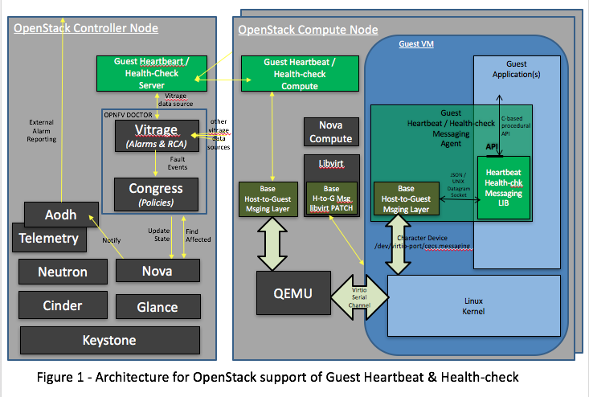
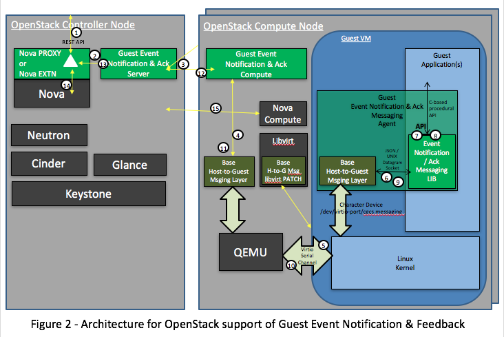
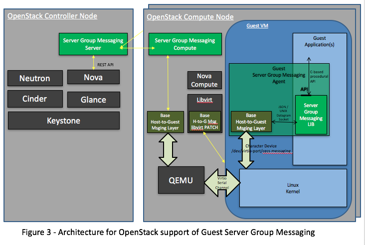

| Author: | Greg Waines |
|---|---|
| Organization: | Wind River Systems |
| Organization: | OPNFV - High Availability |
| Status: | Draft |
| Date: | March 2017 |
| Revision: | 1.3 |
Abstract
This document provides an overview of a set of new optional capabilities where the OpenStack Cloud messages into the Guest VMs in order to provide improved Availability of the hosted VMs. These new capabilities include: enabling the detection of and recovery from internal VM faults, enabling Guest VMs to gracefully handle and provide loss-of-service warnings to cloud adminstrative operations on the VM and providing a simple out-of-band messaging service to prevent scenarios such as split brain.
Table of Contents
This document provides an overview and rationale of a set of new capabilities where the OpenStack Cloud messages into the Guest VMs in order to provide improved Availability of the hosted VMs.
These new capabilities specifically include:
- VM Heartbeating and Health Checking
- VM Event Notification and Feedback
- VM Peer State Notification and Messaging
All of these capabilities leverage Host-to-Guest Messaging Interfaces / APIs which are built on a messaging service between the OpenStack Host and the Guest VM that uses a simple low-bandwidth datagram messaging capability in the hypervisor and therefore has no requirements on OpenStack Networking, and is available very early after spawning the VM.
For each capability, the document outlines the interaction with the Guest VM, any key technologies involved, the integration into the larger OpenStack and OPNFV Architectures (e.g. interactions with VNFM), specific OPNFV HA Team deliverables, and the use cases for how availability of the hosted VM is improved.
The intent is for the OPNFV HA Team to review the proposals of this document with the related other teams in OPNFV (Doctor and Management & Orchestration (MANO)) and OpenStack (Nova).
The Host-to-Guest messaging APIs used by the services discussed in this document use a JSON-formatted application messaging layer on top of a ‘virtio serial device’ between QEMU on the OpenStack Host and the Guest VM. JSON formatting provides a simple, humanly readable messaging format which can be easily parsed and formatted using any high level programming language being used in the Guest VM (e.g. C/C++, Python, Java, etc.). Use of the ‘virtio serial device’ provides a simple, direct communication channel between host and guest which is independent of the Guest’s L2/L3 networking.
The upper layer JSON messaging format is actually structured as a hierarchical JSON format containing a Base JSON Message Layer and an Application JSON Message Layer:
the Base Layer provides the ability to multiplex different groups of message types on top of a single ‘virtio serial device’ e.g.
- heartbeating and healthchecks,
- command notification and feedback,
- server group messaging,
and
the Application Layer provides the specific message types and fields of a particular group of message types.
Normally OpenStack monitoring of the health of a Guest VM is limited to a black-box approach of simply monitoring the presence of the QEMU/KVM PID containing the VM.
VM Heartbeating and Health Checking provides a heartbeat service to monitor the health of guest application(s) within a VM running under the OpenStack Cloud. Loss of heartbeat or a failed health check status will result in a fault event being reported to OPNFV's DOCTOR infrastructure for alarm identification, impact analysis and reporting. This would then enable VNF Managers (VNFMs) listening to OPNFV's DOCTOR External Alarm Reporting through Telemetry's AODH, to initiate any required fault recovery actions.
The VM Heartbeating and Health Checking functionality is enabled on a VM through a new flavor extraspec indicating that the VM supports and wants to enable Guest Heartbeating. An extension to Nova Compute uses this extraspec to setup the required 'virtio serial device' for Host-to-Guest messaging, on the QEMU/KVM instance created for the VM.
A daemon within the Guest VM will register with the OpenStack Guest Heartbeat Service on the compute node to initiate the heartbeating on itself (i.e. the Guest VM). The OpenStack Compute Node will start heartbeating the Guest VM, and if the heartbeat fails, the OpenStack Compute Node will report the VM Fault thru DOCTOR and ultimately VNFM will see this thru NOVA VM State Chagne Notifications thru AODH. I.e. VNFM wouild see the VM Heartbeat Failure events in teh same way it sees all other VM Faults, thru DOCTOR initiated VM state changes.
Part of the Guest VM's registration process is the specification of the heartbeat interval in msecs. I.e. the registering Guest VM specifies the heartbeating interval.
Guest heartbeat works on a challenge response model. The OpenStack Guest Heartbeat Service on the compute node will challenge the registered Guest VM daemon with a message each interval. The registered Guest VM daemon must respond prior to the next interval with a message indicating good health. If the OpenStack Host does not receive a valid response, or if the response specifies that the VM is in ill health, then a fault event for the Guest VM is reported to the OpenStack Guest Heartbeat Service on the controller node which will report the event to OPNFV's DOCTOR (i.e. thru the OpenStack Vitrage data source APIs).
The registered Guest VM daemon's response to the challenge can be as simple as just immediately responding with OK. This alone allows for detection of a failed or hung QEMU/KVM instance, or a failure of the OS within the VM to schedule the registered Guest VM's daemon or failure to route basic IO within the Guest VM.
However the registered Guest VM daemon's response to the challenge can be more complex, running anything from a quick simple sanity check of the health of applications running in the Guest VM, to a more thorough audit of the application state and data. In either case returning the status of the health check enables the OpenStack host to detect and report the event in order to initiate recovery from application level errors or failures within the Guest VM.
In summary, the deliverables of this activity would be:
Host Deliverables: (OpenStack and OPNFV blueprints and implementation)
- an OpenStack Nova or libvirt extension to interpret the new flavor extraspec and if present setup the required 'virtio serial device' for Host-to-Guest heartbeat / health-check messaging, on the QEMU/KVM instance created for the VM,
- an OPNFV Base Host-to-Guest Msging Layer Agent for multiplexing of Application Layer messaging over the 'virtio serial device' to the VM,
- an OPNFV Heartbeat / Health-Check Compute Agent for local heartbeating of VM and reporting of failures to the OpenStack Controller,
- an OPNFV Heartbeat / Health-check Server on the OpenStack Controller for receiving VM failure notifications and reporting these to Vitrage thru Vitrage's Data Source API,
Guest Deliverables:
a Heartbeat / Health-Check Message Specification covering
- Heartbeat / Health-Check Application Layer JSON Protocol,
- Base Host-to-Guest JSON Protocol,
- Details on the use of the underlying 'virtio serial device',
a Reference Implementation of the Guest-side support of Heartbeat / Health-check containing the peer protocol layers within the Guest.
- will provide code and compile instructions,
- Guest will compile based on its specific OS.
This proposal requires review with OPNFV's Doctor and Management & Orchestration teams, and OpenStack's Nova Team.
VM Event Notification and Feedback provides application(s) within a Guest VM running under OpenStack, the ability to receive notification of and provide feedback on actions about to be performed against the VM. For example, on notifications, the guest application within the VM can take this opportunity to cleanly shut down or transfer its service to a peer VM, and / or provide feedback that loss of application service may occur due to state of the Guest VM or its peer standby Guest VM.
There are two high-level approaches being considered for the design / architecture for managing the feedback-request and notification-indication to the VM, prior to the execution of the actual Nova command:

A Transparent Nova Proxy
A Transparent Nova Proxy entity takes over the public REST APIs of the core Nova component. Nova Proxy intercepts all messages to core Nova, and for a subset of those Nova messages (e.g. stop, reboot, pause, ...) first requests feedback and notifies the guest of the upcoming request, prior to forwarding the (unmodified) message on to Nova for actual execution of the command.
Extending Nova with a set of parallel commands
Extend Nova with a set of parrallel commands (e.g. safe-stop, safe-reboot, safe-pause, ...) which first requests the feedback and notifies the guest of the upcoming request, prior to executing the associated core Nova functionality (i.e. stop, reboot, pause, ...).
NOTE: In the current design proposal, the VM is solicited for feedback/impact and notified of the upcoming action/command, independent of the VNFM. I.e. even for commands issued by the VNFM, this service provides an optional check on the state of the VM and a notification to the VM for graceful handling of the command. An alternative approach would be to go thru the VNFM to both check the state of the VM and notify the VM of the event. More discussion is required here with the Management and Orchestration OPNFV Team.
A registered daemon running in the Guest VM is used as a conduit for notifications of VM lifecycle events being taken by OpenStack that will impact this VM. Reboots, pause/resume and migrations are examples of the types of events a Guest VM can be notified of via the Nova Proxy or Nova Extended Safe Commands mechanism. The full list of events for which notifications are supported is found below.
- stop
- reboot
- pause
- unpause
- suspend
- resume
- resize
- live-migrate
- cold-migrate
Notifications are an opportunity for the VM to take preparatory actions in anticipation of the forthcoming event. For example,
- A reboot or stop notification might allow the application to stop accepting transactions and cleanly wrap up existing transactions, and/or gracefully close files; ensuring no data loss,
The registered daemon in the Guest VM will receive all events. If an event is not of interest, it should return immediately with a successful return code. Notifications are subject to configurable timeouts. Timeouts are specified by the registering daemon in the Guest VM.
While notification handlers are running, the event will be delayed. If the timeout is reached, the event will be allowed to proceed.
In addition to notifications, Nova Proxy or Nova Extended Safe Command also provides the opportunity for the VM to provide feedback on any proposed event. Currently the feedback supported is either 'ok' or 'lossOfService-warning'. Nova Proxy or Nova Extended Safe Command will first send out a Feedback Request, and then depending on the received feedback either abort the command (i.e. if 'lossOfService-warning' received) or send the Notification of the event to the VM (i.e. if 'ok' received), followed by forwarding the command on to core Nova for execution.
The Feedback request is subject to a configurable timeout. The timeout is specified when the daemon in the Guest VM registers with compute services on the host. If the VM fails to provide feedback within the timeout it is assumed to have no feedback with respect to the proposed action.
An example of an application scenario where a feedback of lossOfService-warning would be returned on a feedback request:
- an active-standby application deployment (1:1), where the active provides lossOfService-warning feedback on a shutdown or pause or ... due to its peer standby is not ready or synchronized.
A feedback request handler should generally not take any action beyond returning its feedback. Instead any preparatory actions should be done on the event notification that follows.
The OpenStack Cloud is not required to respect the feedback from the VM. Any feedback warnings may be ignored in certain scenarios. For REST API / CLI commands from operators, Nova Proxy will not send a feedback request if a '--force' option is present; i.e. only a Notification message will be sent to the VM, before forwarding the command request on to core Nova.
In summary, the deliverables for both Feedback and Notification would be:
Host Deliverables:
- a Nova or libvirt extension to interpret the new flavor extraspec and if present setup the required 'virtio serial device' for Host-to-Guest notification & feedback messaging, on the QEMU/KVM instance created for the VM,
- [ leveraging the Base Host-to-Guest Msging Layer Agent from previous section ],
- a Nova Proxy or Nova Extension to implement the high-level logic of requesting feedback and conditionally notifying guest and executing the Nova command,
- a Notification & Feedback Server on the Controller for managing the routing of notification and feedback requests to and from the proper compute and VM,
- a Notification & Feedback Compute Agent for implementing the Application Layer Notification & Feedback JSON Protocol with the VM,
Guest Deliverables:
a Notification & Feedback Message Specification covering
- Notification & Feedback Application Layer JSON Protocol,
- [ leveraging Base Host-to-Guest JSON Protocol from previous section ],
- [ leveraging Details on the use of the underlying 'virtio serial device' from previous section ],
a Reference Implementation of the Guest-side support of Notification & Feedback Messaging containing the peer protocol layers and Guest Application hooks within the Guest.
This proposal requires review with OPNFV's Management & Orchestration team and OpenStack's Nova Team.
Server Group State Notification and Messaging is a service to provide simple low-bandwidth datagram messaging and notifications for servers that are part of the same server group. This messaging channel is available regardless of whether IP networking is functional within the server, and it requires no knowledge within the server about the other members of the group.
NOTE: A Server Group here is the OpenStack Nova Server Group concept where VMs are grouped together for purposes of scheduling. E.g. A specific Server Group instance can specify whether the VMs within the group should be scheduled to run on the same compute host or different compute hosts. A 'peer' VM in the context of this section refers to a VM within the same Nova Server Group.
This Server Group Messaging service provides three types of messaging:
- Broadcast: this allows a server to send a datagram (size of up to 3050 bytes) to all other servers within the server group.
- Notification: this provides servers with information about changes to the (Nova) state of other servers within the server group.
- Status: this allows a server to query the current (Nova) state of all servers within the server group (including itself).
A Server Group Messaging entity on both the controller node and the compute nodes manage the routing of of VM-to-VM messages through the platform, leveraging Nova to determine Server Group membership and compute node locations of VMs. The Server Group Messaging entity on the controller also listens to Nova VM state change notifications and querys VM state data from Nova, in order to provide the VM query and notification functionality of this service.
This service is not intended for high bandwidth or low-latency operations. It is best-effort, not reliable. Applications should do end-to-end acks and retries if they care about reliability.
This service provides building block type capabilities for the Guest VMs that contribute to higher availability of the VMs in the Guest VM Server Group. Notifications of VM Status changes potentially provide a faster and more accurate notification of failed peer VMs than traditional peer VM monitoring over Tenant Networks. While the Broadcast Messaging mechanism provides an out-of-band messaging mechanism to monitor and control a peer VM under fault conditions; e.g. providing the ability to avoid potential split brain scenarios between 1:1 VMs when faults in Tenant Networking occur.
In summary, the deliverables for Server Group Messaging would be:
Host Deliverables:
- a Nova or libvirt extension to interpret the new flavor extraspec and if present setup the required 'virtio serial device' for Host-to-Guest Server Group Messaging, on the QEMU/KVM instance created for the VM,
- [ leveraging the Base Host-to-Guest Msging Layer Agent from previous section ],
- a Server Group Messaging Compute Agent for implementing the Application Layer Server Group Messaging JSON Protocol with the VM, and forwarding the messages to/from the Server Group Messaging Server on the Controller,
- a Server Group Messaging Server on the Controller for routing broadcast messages to the proper Computes and VMs, as well as listening for Nova VM State Change Notifications and forwarding these to applicable Computes and VMs,
Guest Deliverables:
a Server Group Messaging Message Specification covering
- Server Group Messaging Application Layer JSON Protocol,
- [ leveraging Base Host-to-Guest JSON Protocol from previous section ],
- [ leveraging Details on the use of the underlying 'virtio serial device' from previous section ],
a Reference Implementation of the Guest-side support of Server Group Messaging containing the peer protocol layers and Guest Application hooks within the Guest.
This proposal requires review with OPNFV's Management & Orchestration team and OpenStack's Nova Team.
The Reach-thru Guest Monitoring and Services described in this document leverage Host-to-Guest messaging to provide a number of extended capabilities that improve the Availability of the hosted VMs. These new capabilities enable detection of and recovery from internal VM faults, enables the Guest VMs to gracefully handle or provide potential loss-of-service warnings back on cloud adminstrative operations on the VM and provides a simple out-of-band messaging service to prevent scenarios such as split brain.
The integration of these new capabilities into the larger OpenStack and OPNFV Architectures need to be reviewed with the other related teams in OPNFV (Doctor and Management & Orchestration (MANO)) and OpenStack (Nova).